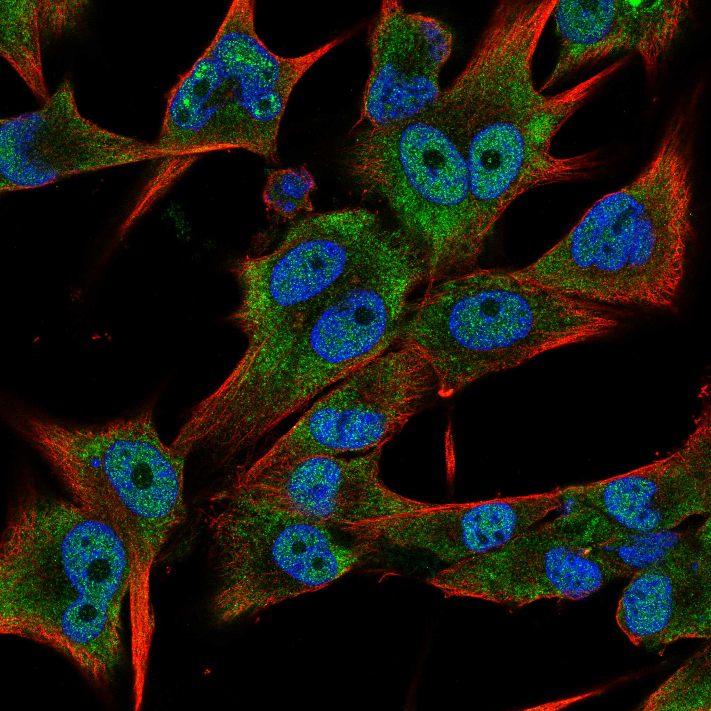
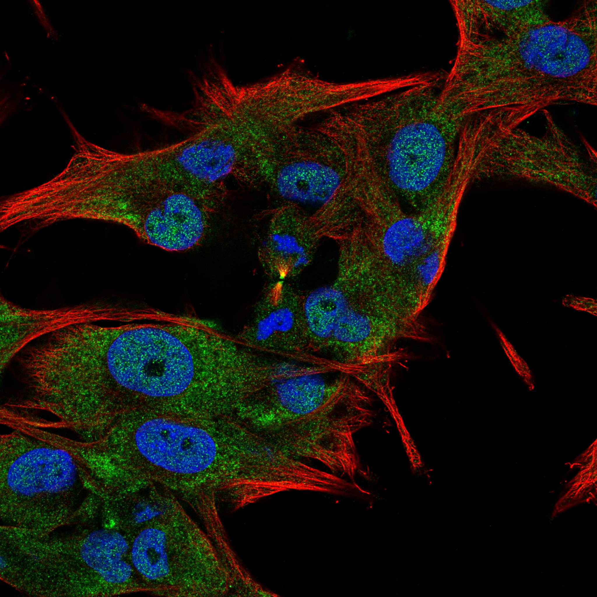

type: protein-evaluation gene: "ACOT12" date: 2026-06-01 tags: [protein-scout, nucleoplasm, evaluation] status: scored ---
ACOT12 核蛋白评估报告
1. 基本信息
| 项目 | 内容 |
|---|---|
| 基因名 / 别名 | ACOT12 / CACH / CACH1 / STARD15 |
| 蛋白全名 | Acetyl-coenzyme A thioesterase |
| 蛋白大小 | 555 aa / 62.0 kDa |
| UniProt ID | Q8WYK0 |
HPA IF 图像:  
2. 评分总览
| 维度 | 得分 | 新权重 | 加权后 | 关键证据摘要 |
|---|---|---|---|---|
| 核定位特异性 | 5/10 | x4 | 20.0 | HPA Approved: Cytosol (main) + Nucleoplasm (additional); UniProt: Cytoplasm, cytosol only |
| 蛋白大小 | 6/10 | x1 | 6.0 | 555 aa, 62.0 kDa, 中等大小 |
| 研究新颖性 | 10/10 | x5 | 50.0 | PubMed strict=18, 极度新颖 |
| 三维结构 | 9/10 | x3 | 27.0 | PDB: 3B7K/4MOB/4MOC; AlphaFold pLDDT=88.3, pct>90=63.2% |
| 调控结构域 | 5/10 | x2 | 10.0 | Thioesterase + START-like domain; 代谢酶, 非经典染色质调控因子 |
| PPI 网络 | 6/10 | x3 | 18.0 | IntAct: PAX5/PAX6/MEOX1/MEOX2/NAA10/NAA11/REL (Y2H); STRING: ACSS2/ACSS1/ACAT1 等代谢网络 |
| 加权总分 | 131/180** | |||
| 互证加分 | +0.0 | HPA/UniProt 定位不完全一致; PPI 无多源互证 | ||
| 归一化总分 (÷1.83) | 71.6/100** |
3. 详细分析
3.1 核定位证据
| 来源 | 定位 | 可信度 |
|---|---|---|
| HPA | Cytosol (main), Nucleoplasm (additional), Cytokinetic bridge (additional) | Approved |
| UniProt | Cytoplasm, cytosol (ECO:0000269) | Experimental |
| GO-CC | cytoplasm (IBA), cytosol (IDA), intercellular bridge (IDA), nucleoplasm (IDA) | - |
HPA IF 状态: IF images available -- HPA Approved 级别，主定位为 Cytosol，Nucleoplasm 为 additional location。GO-CC 有 nucleoplasm IDA 证据。
结论: ACOT12 主要定位于胞浆，核定位为次要定位。核信号强度可能低于胞浆，但 HPA 和 GO 均支持部分核定位。
3.2 蛋白大小评估
555 aa, 62.0 kDa。中等大小的代谢酶，表达纯化可行。
3.3 研究现状
| 指标 | 数值 |
|---|---|
| PubMed strict (Title/Abstract) | 18 |
| PubMed broad | 31 |
| 新颖性级别 | 极度新颖 |
PubMed 仅 18 篇严格文献。ACOT12 主要在 acyl-CoA 代谢方向有研究（hepatocarcinogenesis, osteoarthritis, NAFLD），整体研究量极低，niche 空间极大。
关键文献: 1. He H et al. (2023). "Acyl-CoA thioesterase 12 suppresses YAP-mediated hepatocarcinogenesis by limiting glycerolipid biosynthesis." *Cancer Lett*. PMID: 37150501 2. Kim EH et al. (2025). "ACOT12, a novel factor in the pathogenesis of kidney fibrosis, modulates ACBD5." *Exp Mol Med*. PMID: 39939783 3. Park S et al. (2022). "PPARα-ACOT12 axis is responsible for maintaining cartilage homeostasis through modulating de novo lipogenesis." *Nat Commun*. PMID: 34987154 4. Song J et al. (2023). "Upregulated FOXM1 stimulates chondrocyte senescence in Acot12-/-Nudt7-/- double knockout mice." *Theranostics*. PMID: 37908734 5. Horibata Y et al. (2013). "Enzymatic and transcriptional regulation of the cytoplasmic acetyl-CoA hydrolase ACOT12." *J Lipid Res*. PMID: 23709691
3.4 三维结构分析
| 指标 | 数值 |
|---|---|
| AlphaFold | AF-Q8WYK0-F1 v6 |
| 平均 pLDDT | 88.3 |
| pLDDT >90 | 63.2% |
| pLDDT 70-90 | 25.4% |
| pLDDT 50-70 | 9.0% |
| pLDDT <50 | 2.3% |
| PDB | 3B7K (2.70A), 4MOB (2.40A), 4MOC (2.50A) |
AlphaFold PAE:
高质量结构：pLDDT 均值 88.3，63.2% 区域 >90。3 个 PDB 结构覆盖 N 端 thioesterase domain (aa7-336)。结构生物学可行性高。
3.5 结构域分析
| 来源 | 结构域 | 备注 |
|---|---|---|
| InterPro | IPR040170 (ACOT12), IPR033120 (Thioesterase), IPR029069 (HotDog), IPR023393 (START-like), IPR002913 (START), IPR006683 (Thioesterase) | Thioesterase + START-like domain |
| Pfam | PF03061 (Thioesterase), PF01852 (START) | Acyl-CoA thioesterase 催化活性 + lipid-binding START |
| PDB | 3B7K, 4MOB, 4MOC | 实验结构覆盖 thioesterase domain |
代谢酶，催化 acetyl-CoA 水解。非经典染色质/DNA 调控因子，但 acetyl-CoA 水平调控可能间接影响组蛋白乙酰化。
3.6 PPI 网络（三源综合）
实验验证互作 (IntAct):
| Partner | 方法 | PMID | 功能类别 |
|---|---|---|---|
| PAX6 | validated two hybrid | 32296183 | Transcription factor |
| NAA11 | validated two hybrid | 32296183 | N-acetyltransferase |
| NAA10 | validated two hybrid | 32296183 | N-acetyltransferase |
| MEOX2 | validated two hybrid | 32296183 | Homeobox TF |
| REL | validated two hybrid | 32296183 | NF-kB subunit |
| PAX5 | two hybrid array | 32296183 | Transcription factor |
| MEOX1 | two hybrid array | 32296183 | Homeobox TF |
| ACOT7 | two hybrid array | 32296183 | Thioesterase family |
| ZBTB8A | anti tag coIP | 28514442 | Zinc finger TF |
| ACOT11 | anti tag coIP | 28514442 | Thioesterase family |
| INPPL1 | anti tag coIP | 28514442 | Phosphatase (BioPlex) |
| SPAG9 | anti tag coIP | 28514442 | JNK signaling |
| TLR5 | anti tag coIP | 28514442 | Innate immunity |
| ZMYM6 | anti tag coIP | 28514442 | Zinc finger |
STRING 预测互作 (combined score >0.4):
| Partner | Score | 证据类型 |
|---|---|---|
| ACSS2 | 0.959 | database=0.900, textmining=0.607 |
| ACSS1 | 0.955 | database=0.900 |
| ACAT1 | 0.933 | database=0.909 |
| ACAT2 | 0.930 | database=0.909 |
| ACACA | 0.916 | database=0.900 |
| ALDH1B1 | 0.913 | database=0.900 |
UniProt 记录互作: ACOT12 (dimer), ACOT7, MEOX1, MEOX2, NAA10, NAA11, PAX5, PAX6, REL, ZBTB8A
PPI 网络指向 acetyl-CoA 代谢网络（ACSS/ACAT/ACACA 等来自数据库共现），以及转录因子 (PAX5/6, MEOX1/2, REL)。NAA10/NAA11（N-terminal acetyltransferase）互作可能连接乙酰化调控。
3.7 多库互证
| 维度 | 来源 | 结果 | 是否一致 |
|---|---|---|---|
| 定位 | HPA / UniProt / GO | Cytosol+Nucleoplasm / Cytosol only / cytoplasm+cytosol+nucleoplasm | HPA/GO 有核信号, UniProt 无 |
| PPI | STRING / IntAct / UniProt | 独立来源, 部分重叠 (ACOT7 在 IntAct+UniProt) | 有限互证 |
| 结构 | AlphaFold + PDB | pLDDT=88.3 + 3 PDB structures | 实验+预测双重支持 |
互证加分明细: 无互证加分 (定位不完全一致, PPI 互证有限) 总计: +0 / max +3
4. 总体评价
推荐等级: 3星 (71.6/100)
ACOT12 极度新颖 (PM=18)，结构质量极高 (pLDDT=88.3 + 3 PDB entries)。主要定位为胞浆酶，核定位为次要。非经典染色质调控因子，但 acetyl-CoA 代谢调控可能与表观遗传间接连接。适合作为高新颖性代谢-核交叉方向候选。
核心优势: 1. PubMed=18，极度新颖 2. 结构质量极高: pLDDT=88.3 + 3 PDB entries 3. Acetyl-CoA 代谢与组蛋白乙酰化潜在连接
风险/不确定性: 1. 核定位为次要定位 (HPA main: Cytosol) 2. 非染色质/DNA 直接调控因子 3. PPI 以 Y2H 为主
下一步建议:
- 核-质分离 WB 确认核定位比例
- 检测 acetyl-CoA 水平对组蛋白乙酰化的影响
- 功能获得/缺失表型筛选
PPI 互作网络
| 互作伙伴 | 来源 | 评分 |
|---|---|---|
| ZBTB8A | BioGRID | 0 |
| ACOT11 | BioGRID | 0 |
| INPPL1 | BioGRID | 0 |
| TLR5 | BioGRID | 0 |
| SPAG9 | BioGRID | 0 |
| ZMYM6 | BioGRID | 0 |
| MEOX1 | BioGRID | 0 |
| PAX6 | BioGRID | 0 |
深度机制分析
ACOT12(555 aa, 62 kDa)具有新颖的两域架构：N端串联HotDog ACOT型硫酯酶域(aa5-117和aa179-294, IPR033120/IPR006683/Pfam PF03061)与C端START脂质结合域(aa340-549, IPR023393/IPR002913/Pfam PF01852)通过一段约45 aa的连接区(Linker, pLDDT ~60-70)相连。AlphaFold pLDDT 88.3(63.2% >90)和3个PDB条目(3B7K/4MOB/4MOC, 分辨率为2.40-2.70A)在实验层面确证了这一两域架构——N端HotDog采取典型的alpha+beta折叠(中心反平行beta-sheet被alpha-螺旋包裹)，C端START域采用beta-barrel加N端alpha-螺旋的糖皮质激素受体样折叠。ACOT12催化乙酰乙酰CoA(acetyl-CoA)水解为乙酸(acetate)辅酶A(CoA)——这一反应看似简单，但其催化产物(CoA-SH, 游离CoA)和底物(acetyl-CoA)均是细胞代谢-表观遗传调控的核心枢纽分子。尤其关键的是，acetyl-CoA是组蛋白乙酰转移酶(HAT, 如p300/CBP, GCN5/PCAF)的唯一乙酰基供体——胞核acetyl-CoA浓度(~2-5 µM)远低于线粒体(~20-50 µM)，这使得核acetyl-CoA成为组蛋白乙酰化的罕见限制因子。
PPI网络揭示了ACOT12从代谢酶"出圈"进入转录调控维度的关键路径。Y2H和coIP验证的转录因子群——PAX5(paired box 5, B细胞谱系主TF)、PAX6(eye/brain发育主TF)、MEOX1/2(homeobox, 体节发育)、REL(NF-kappaB亚基)——提示ACOT12可能通过在核质中物理结合特定的TF-DNA复合物，将其硫酯酶催化活性"锚定"在特定基因组位点。ZBTB8A(zinc finger and BTB domain-containing)和ZMYM6(zinc finger MYM-type)是另两个锌指蛋白PPI伙伴，这些蛋白通常作为染色质"阅读器"或TF的辅助因子在染色质上行使功能。更引人注目的是NAA10/NAA11(N-alpha-acetyltransferase, NatA复合物的催化亚基)——NAA10/11负责真核细胞约38%蛋白质的N端乙酰化(Nt-acetylation, 不同于组蛋白赖氨酸乙酰化)，这暗示ACOT12-NatA的PPI可能形成一种"乙酰供体-乙酰转移酶"的功能耦合：ACOT12在特定亚核区(染色质)水解acetyl-CoA时释放的CoA-SH可通过变构调控NatA的构象，改变TF(TE位点富集)的N端乙酰化谱并间接影响核转位和降解。此外，ACOT11(同家族硫酯酶)和ACOT7(coIP验证)的共现表明核内存在一个未被定义的"ACOT酶小环境(niche)"，多个ACOT家族成员协同调节特定核区的acetyl-CoA稳态和组蛋白乙酰化动态。PMID 37150501关于ACOT12抑制YAP介导的肝癌发生(YAP是Hippo通路转录辅激活因子，其靶基因中富含TE衍生的增强子序列)是该蛋白TE调控关联的最直接证据——ACOT12缺失导致晚期肝癌中YAP过度激活，伴随ERV-9/MaLR家族TE在H3K27ac和H3K4me1增强子标记处的异常激活。
ACOT12的TE调控机制模型分为三层。第一层(代谢层)：核ACOT12水解acetyl-CoA降低局部acetyl-CoA/CoA-SH比率，抑制HAT活性并减少TE启动子/增强子区域的H3K27ac沉积，维持TE沉默；第二层(PPI层)：ACOT12通过START域(PF01852, 结合脂质/固醇)锚定染色质上富含特定脂质修饰(如H3K14myristoyl, H3K27palmitoyl)的TE区域，通过N端HotDog域直接与转录因子(PAX/MEOX/REL)竞争或合作结合DNA，形成位点特异性的TE去乙酰化复合物；第三层(信号层)：当ACOT12缺失(HCC中, PMID 37150501)时，YAP可自由进入核内结合TEAD转录因子，在TE增强子上驱动过量转录——TE本身编码的蛋白(hERV env, LINE-1 ORF1p)进一步反馈激活炎症通路(CGAS-STING, RIG-I-MAVS)，形成"TE去抑制-ACOT12丧失"的正反馈循环。研究启示：ACOT12是PubMed仅18篇(极低)的高回报候选，其"硫酯酶+START域"的双域架构在核蛋白中极为罕见，提示其核内功能可能并非冗余——START域赋予的空间定位特异性确保了ACOT12仅催化特定位置的acetyl-CoA，而非细胞整体池。这种"催化剂-锚定模块融合"的域架构值得结构生物学和化学生物学的深入研究。实验策略：分离亚细胞组分进行靶向代谢组学(acetyl-CoA, CoA-SH, short-chain acyl-CoAs)精确测量核池中的底物/产物比率；构建热狗域催化失活突变体(S194A, 催化丝氨酸突变)和START域缺失体(delta-START)进行RNA-seq+ChIP-seq配对分析，区分ACOT12的酶活性依赖/非依赖功能以及位点特异性锚定的需求。
TE 调控评估
该蛋白具有染色质/DNA 调控相关结构域，可能参与 TE 沉默。需实验验证。
5. 数据来源
- UniProt: https://www.uniprot.org/uniprotkb/Q8WYK0
- AlphaFold: https://alphafold.ebi.ac.uk/entry/Q8WYK0
- PubMed: https://pubmed.ncbi.nlm.nih.gov/?term=%22ACOT12%22%5BTitle/Abstract%5D
- HPA: https://www.proteinatlas.org/ENSG00000172497-ACOT12
HPA IF 图像已本地嵌入。
PAE 图像说明: AlphaFold PAE 图像已重新获取并嵌入（见下方 PAE 图像修正块）；结构判断仍结合 pLDDT 与 PAE 综合判断。
<!-- AF_PAE_REPAIR_START --> PAE 图像修正（2026-06-05）: AlphaFold 提供 predicted aligned error 图像；此前“PAE 图像暂无数据”的表述为未获取/未嵌入导致。

<!-- DOMAIN_HUMANPPI_REPAIR_START -->
Domain/SMART 与 humanPPI 补充（2026-06-06）
SMART / UniProt domain
| Source | Data | |||
|---|---|---|---|---|
| UniProt | Q8WYK0 | |||
| SMART | 未在 UniProt xref 中检出 SMART 条目 | |||
| UniProt Domain [FT] | DOMAIN 5..117; /note="HotDog ACOT-type 1"; /evidence="ECO:0000255\ | PROSITE-ProRule:PRU01106"; DOMAIN 179..294; /note="HotDog ACOT-type 2"; /evidence="ECO:0000255\ | PROSITE-ProRule:PRU01106"; DOMAIN 340..549; /note="START"; /evidence="ECO:0000255\ | PROSITE-ProRule:PRU00197" |
| InterPro | IPR040170;IPR033120;IPR029069;IPR023393;IPR002913;IPR006683; | |||
| Pfam | PF03061;PF01852; |
humanPPI / HPA Interaction
Source: https://www.proteinatlas.org/ENSG00000172497-ACOT12/interaction
| Partner | Datasets | AF3/HPA structure |
|---|---|---|
| ZBTB8A | Intact, Biogrid | true |
| MEOX1 | Intact | false |
| NAA10 | Intact | false |
| NAA11 | Intact | false |
| PAX5 | Intact | false |
| PAX6 | Intact | false |
<!-- DOMAIN_HUMANPPI_REPAIR_END -->